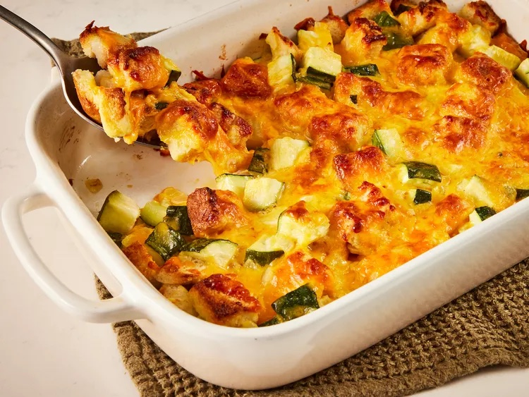

Recipe: Cheesy Zucchini Casserole

Description
You can’t beat the classics, and this simple, cheesy zucchini bake is as classic as they come.
Ingredients:
- 4 slices bread, cubed
- 1/4 cup melted butter
- 2 cups cubed zucchini
- 1 large onion, finely chopped
- 1 large egg, beaten
- 1 teaspoon garlic salt
- 2 cups shredded Cheddar cheese
Steps
- Gather all ingredients. Preheat the oven to 350 degrees F (175 degrees C).
- Place bread cubes in a medium bowl and pour melted butter over top. Add zucchini, onion, egg, and garlic salt; mix well.
- Transfer the mixture into a 9x13-inch baking dish and top with cheese.
- Cover and bake in the preheated oven for 30 minutes. Uncover the dish and bake for another 30 minutes.
Back to Home